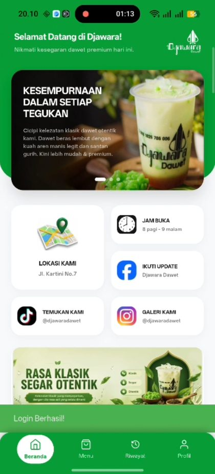

Semester 2 · 2026
Sistem Aplikasi Pemesanan Djawara Dawet
Developer / Full-Stack Project, Politeknik Negeri Jember
- Merancang dan membangun aplikasi pemesanan untuk mendigitalisasi proses transaksi pelanggan UMKM Djawara Dawet.
- Mengimplementasikan fitur pengelolaan katalog produk, keranjang pemesanan, serta kalkulasi otomatis total transaksi secara real-time.
- Menyusun skema basis data untuk penyimpanan riwayat transaksi secara terstruktur dan aman.
